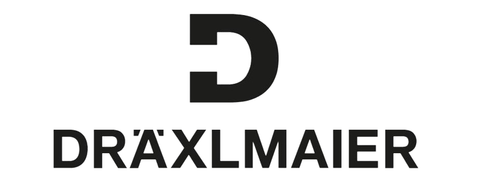

We are dedicated to revolutionizing how you manage notifications in the dynamic environment of Draexlmaier Group.
Our vision is to create a harmonious balance between staying informed and avoiding information overload.
We empower employees to take control of their notifications, enabling them to focus on what matters.
Your data security is our priority. We employ encryption protocols to safeguard sensitive information.
Embrace a new era of efficient communication and productivity with Draexlmaier.
If you have questions or want to learn more, reach out to our support team.